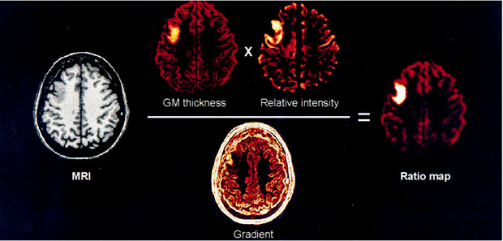

RESEARCH
Human epileptogenesis is a complex process, and its anatomical and functional basis is poorly understood. We believe that MRI techniques advance our understanding of the basic mechanisms of epilepsy.We have pioneered a series of novel computer-based methods to improve the detection of subtle epileptogenic lesions that are not visible on conventional MRI.
Particular emphasis is placed on temporal lobe epilepsy, epilepsy related to malformations of cortical development and idiopathic generalized epilepsy.
To assess brain pathology in various forms of epilepsy, we apply several advanced image acquisition techniques such as high-field structural imaging, diffusion tensor imaging, functional MRI, and T2-relaxometry. We also apply surface-based morphometry, texture analysis, volumetry, shape analysis, and morphometric correlation and network analysis.
We have the following main areas of research:
MODELING AND AUTOMATED DETECTION OF EPILEPTOGENIC LESIONS/h3>

Modeling of focal cortical displasia through different MRI-based feature maps.
(Bernasconi et al. 2001, Annals of Neurology)
MRI PREDICTORS OF SURGICAL OUTCOME IN TLE

A) We have shown that patients with unfavorable outcome after surgery (TLE-NSF)
have increased temporo-polar cortical folding complexity compared to those who become seizure free (TLE-SF).
Two representative cases are shown, with complexity values normalized with respect to healthy controls.
B) Our preliminary analysis of serial pre-operative MRI scans showed increased rates of atrophy in the
frontal lobe ipsilateral to the seizure focus in patients with residual seizure after surgery (TLE-NFS)
compared to those who became seizure-free (TLE-SF). Mixed effects interaction analysis indicated that
rate of cortical thinning was about an order of magnitude higher in TLE-NSF relative to TLE-SF
(0.17 mm/year vs. 0.02 mm/year, t= 3.9104, p < 0.005). (Voets and Bernhardt et al. 2011, Neurology)
CORTICAL ATROPHY IN TLE

a) Group analysis of cortical thickness.Areas of significant thinning in patientswith left (LTLE)
and right (RTLE) compared to healthy controls are shown. Significant clusters and peaks
thresholded using randomfield theory at p<0.05 are shown. b) Individual analysis of cortical thickness.
At each vertex, the corresponding proportion of patients with a thickness z-score of >=2 SD with respect to healthy
controls is shown. Only fractions above 10% are displayed. (Bernhardt et al. 2008, NeuroImage)
NETWORK ANALYSIS IN EPILEPSY

Cortical thickness correlation networks
in (A) healthy controls, (B) LTLE, and (C) RTLE. The left column displays the cortical thickness
correlation matrices of 52 anatomical areas. The middle column displays the binary connectivity
matrices thresholded at a fixed network density of 15%. The right column illustrates the
corresponding brain connectivity graph seen from above. (Bernhardt et al. 2011, Cerebral Cortex)

Network robustness analysis. Graphs display the relative size of
the largest connected component (i.e., the largest subnetwork of nodes that are mutually reachable)
as a fraction of removed nodes (left panels) and edges (right panels) by (A) random failures and (B) targeted attacks.
Stars indicate differences (P<0.05) between groups obtained from 1000 permutation tests at each density value.
(Bernhardt et al. 2011, Cerebral Cortex)
MULTIMODAL CONNECTIVITY ANALYSIS IN TLE

Group-wise difference in association between resting functional connectivity and
structural fibre coherence. Whole-brain tract-based spatial statistics results depict voxels (red)
showing correlations between fractional anisotropy and resting functional connectivity (blue) to
specific resting state networks (yellow) for clusters showing altered resting connectivity that were
not explained by grey matter density. Results indicate strong associations between resting connectivity
abnormalities and fractional anisotropy. (Voets et al. 2012, Brain)
DTI-TRACTOGRAPHIC STRUCTURAL CONNECTIVITY ANALYSIS IN TLE

Top. Distance profiling. Profiles of the uncinate (UF),
inferior longitudinal (ILF) and arcuate fasciculi (AF) overlaid on a non-diffusion weighted volume shown
in axial (A) and oblique (B) views. Each tract is divided into 50 color-coded bins, from start (blue)
to end (red).
Bottom. Group comparisons. Z-scores of mean diffusivity and fractional
anisotropy plotted along the normalized length of the tracts (color-coded on the x-axis left lower panel).
Bin-wise average values of TLE patients are compared to those obtained from the corresponding hemisphere (i.e., left
or right) of healthy controls (0 on the y-axis represents the mean in healthy controls). Clusters of significant
differences following random field theory correction are shown as circles. The vertical dashed lines on each graph
separate the temporal (TL) from the frontal (FL) and occipital lobe (OL) portions of the tracts.
(Concha et al. 2012, Neurology)